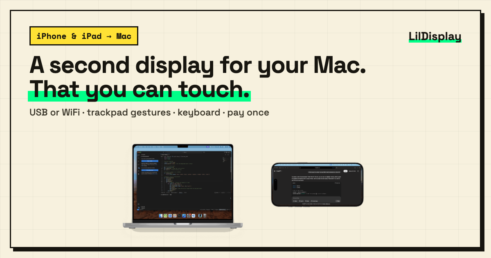

iPhone Duo as a second display for your Mac
Folded, unfolded, and back

iPhone Duo has two very different screens: a 5.4-inch outer screen and a 7.6-inch inner screen that is almost square. A second-display app has to treat them as two different devices, and switch when you fold or unfold.
LilDisplay does that. It tells your Mac which screen it is on, and the Mac creates a display shaped for that screen. When you unfold, the Mac display changes to match the inner screen, without reconnecting.
What you get
- A display sized for each screen, sharp and readable on the outer screen, roomy on the inner one.
- Fold and unfold while connected: the display follows in place with LilDisplay for Mac 3.2 or later.
- Rotation works the same way: turn the phone, or lock Portrait or Landscape in the menu.
- Full Resolution in the Mac's Display Quality menu gives you 1:1 pixels on the inner screen, best over USB.
- Everything else from LilDisplay: touch, trackpad gestures, and typing on the Mac with the iPhone keyboard.
Setting it up
- Install LilDisplay from the App Store and the free LilDisplay Mac app (3.2 or later) from our website.
- Connect over USB or WiFi.
- Fold or unfold whenever you like.
If your Mac app is older than 3.2, LilDisplay still works, but the Mac app restarts itself to change the display size, which takes a few seconds. The app on your phone tells you when an update is available.
iPhone or iPad with iOS 15.6+ · 3 free sessions, then $2.99 once · free Mac app for macOS 14+